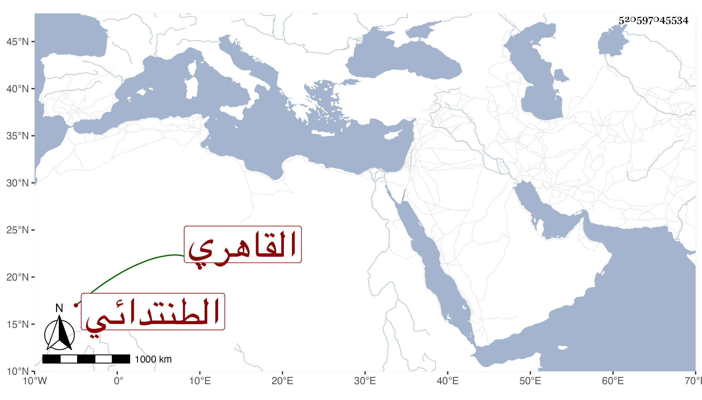

0902Sakhawi.DawLamic.ITO20230111-ara1.EIS1600.520597045534
Biography ID: 520597045534
629
عبد الغفار بن عبد المؤمن الطنتدائي ثم القاهري ويدعى غفيرا . ذكره شيخنا في معجمه فقال : صاحب النوادر وله نظم في الهزل سمعت من نوادره كثيرا بل سمعت من لفظه زجلا أجاب به شخصا كان هجاه بزجل آخر وأوله :
| ما رأيت أسمج من | فجيز من نسى بخير |
يقول فيه :
| لو كان عشرة أشبار | تقول زيد وفتير |
| ويقول فيه سنى | ولكن مذهبه حب الزبير |
مات في سنة ... وترجمه في مكان آخر ردا على من أنكر عليه ذكره فقال كان له اشتغال وتنزل بين الفقهاء في مدارس وكان يفهم ويستحضر أشياء . وذكره المقريزي في عقوده بالمضحك صاحب النوادر اختص بالصاحب شمس الدين المقسي فاشتهر ونادم الأعيان وكان ينظم في الهزل سيما في الأزجال مفحشا في هزله وله اقتدار على سرعة النادرة ولكنه ما مات حتى كسدت سوقه بعد نفاقها ، وبيض لوفاته .
